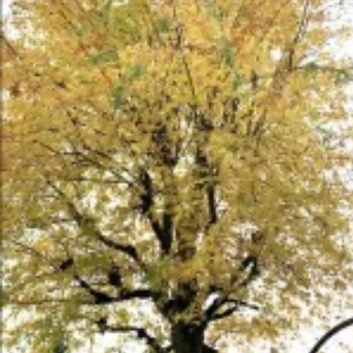
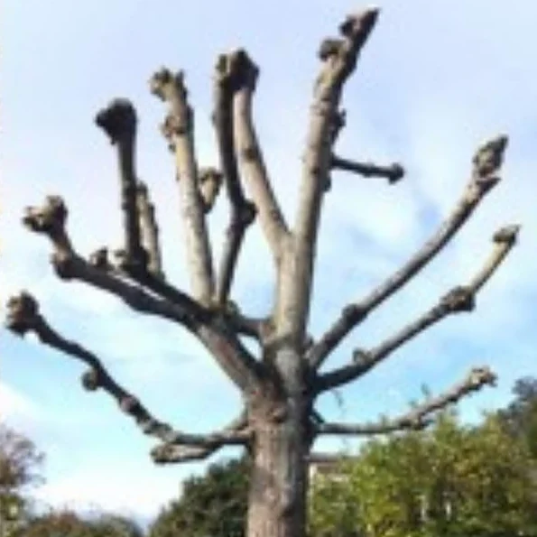
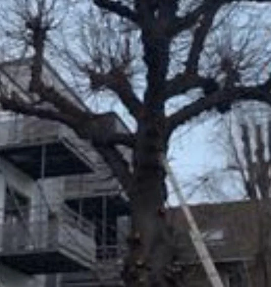
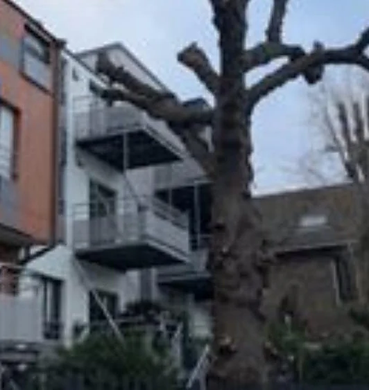
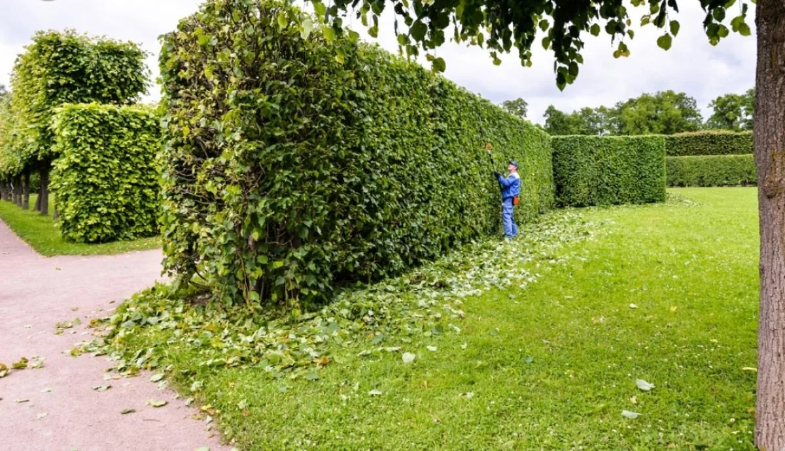
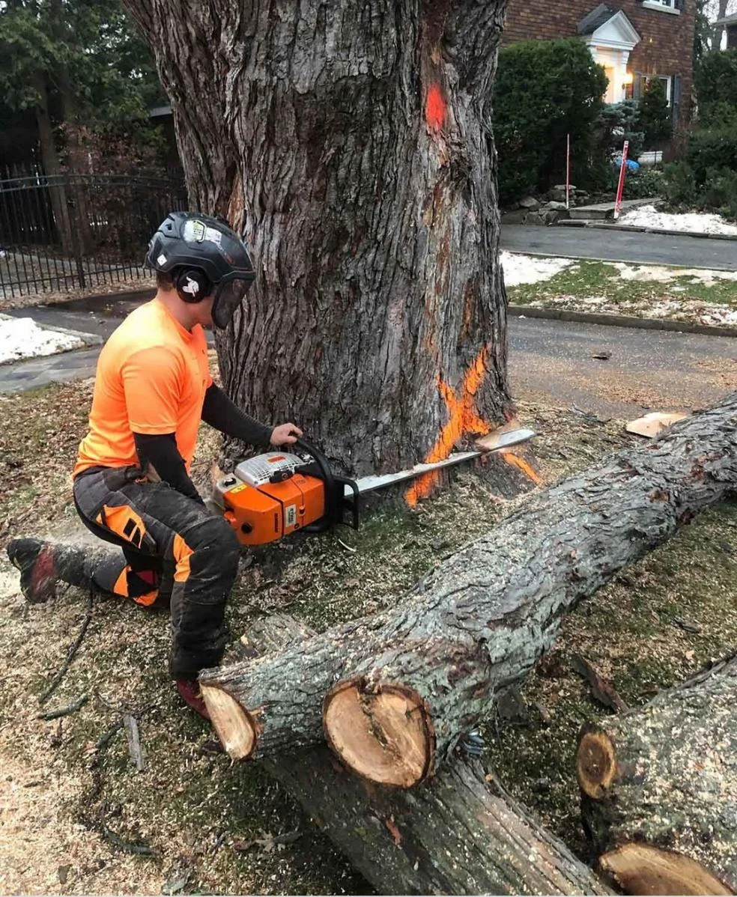
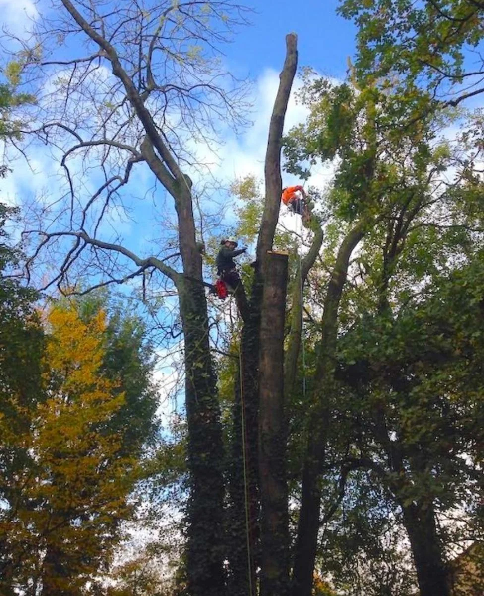
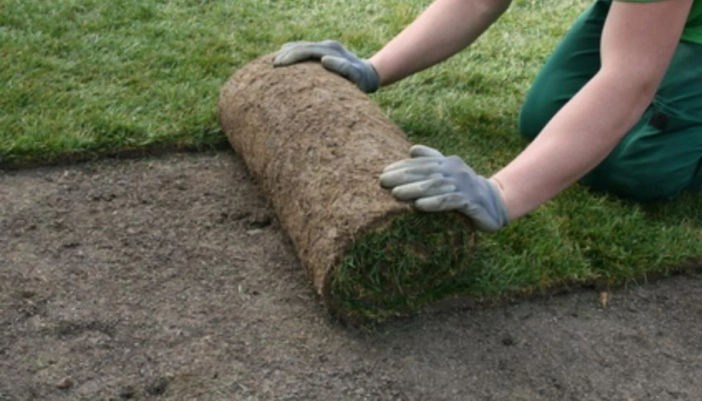
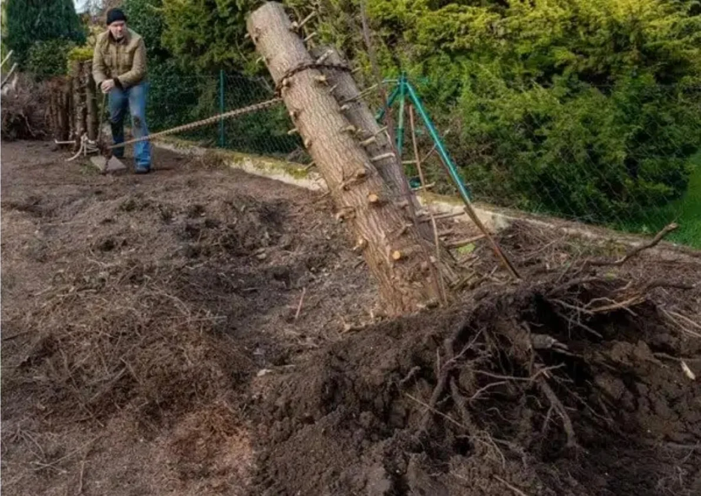
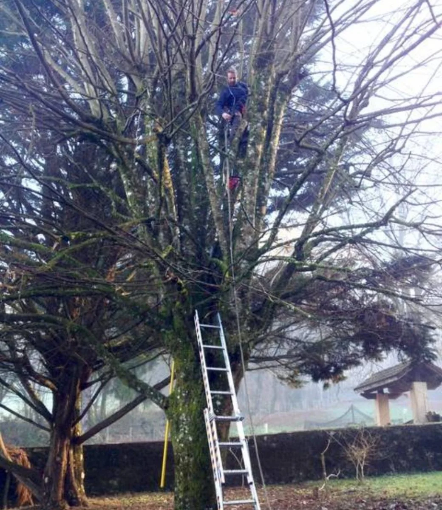

Lagrene Paysagiste 59Votre partenaire expert en aménagement vert à Lille 59000
Faites défiler pour visiter
Nos services
Huit savoir-faire pour votre jardin
De l’élagage à la création de pelouse, Lagrene Paysagiste 59 s’occupe de votre extérieur, à Lille et dans les environs.
Avant / Après
Le résultat, en un geste
Faites glisser le curseur pour comparer l’arbre avant et après l’intervention de Lagrene Paysagiste 59.




Réalisations
Nos chantiers en images
Feuilletez nos réalisations : cliquez sur une page ou faites glisser son coin.
Nos réalisations
Dix chantiers à Lille et dans la métropole

Élagage d’un grand arbre, élagueur au sommet
Des arbres sains, sûrs et élégants.

Haie taillée en bordure d’un massif fleuri
Des haies nettes, denses et bien dessinées.

Taille d’une grande haie de thuyas
Des haies nettes, denses et bien dessinées.

Élagueur équipé découpant un tronc
Abattage d’arbres et de haies, travail soigné.

Élagueur encordé en hauteur dans un arbre
Élagage de tout type d’arbre.

Haie de thuyas taillée au cordeau
Des haies nettes, denses et bien dessinées.

Déroulage d’un rouleau de gazon
Un gazon dense, de la préparation du sol à la pose.

Arbre abattu et dessouché
Souches et racines retirées, terrain dégagé.

Élagage d’un arbre avec une échelle
Des arbres sains, sûrs et élégants.

Haie taillée en bordure de trottoir
Des haies nettes, denses et bien dessinées.
Le prochain chantier, c’est le vôtre
Lun – Ven · 8 h – 19 h · 06 60 59 92 25
Demander un devisCouverture
Toutes les réalisationsNotre approche
Des espaces extérieurs uniques, qui captivent l’œil et apaisent l’esprit.
- Devis gratuit
- Du lundi au vendredi, de 8 h à 19 h
- Lille et sa métropole
Votre partenaire expert en aménagement vert
Vous cherchez à transformer votre espace extérieur pour en faire un lieu exceptionnel ? Lagrene Paysagiste 59 à Lille est votre partenaire idéal. Leur équipe dévouée possède une expertise approfondie dans la métamorphose des espaces extérieurs en véritables oasis de verdure. Chaque étape, du premier concept à la réalisation finale, est pensée avec précision pour refléter vos désirs et sublimer votre jardin en un lieu de détente et de beauté naturelle. Lagrene comprend l’importance de créer des espaces extérieurs qui répondent non seulement à vos attentes, mais qui les surpassent, offrant ainsi un lieu où la nature et le design s’harmonisent pour créer une expérience extérieure remarquable. Leur dévouement à matérialiser vos idées transforme chaque projet en une réalité magnifique, créant ainsi des espaces extérieurs uniques qui captivent l’œil et apaisent l’esprit.
Lagrene, maîtrise et précision naturelle
Maintenir des arbres à la fois sains et esthétiquement plaisants requiert un entretien professionnel. Lagrene Paysagiste 59 excelle dans l’art délicat de l’élagage à Lille. Leur équipe d’experts, passionnés par la préservation de la beauté naturelle des arbres, allie compétences techniques et respect de l’écosystème pour garantir des résultats éblouissants, à la fois sécuritaires et esthétiques. Chaque intervention d’élagage est abordée avec une minutie absolue, en tenant compte non seulement de l’aspect visuel des arbres, mais aussi de leur santé et de leur intégrité structurelle. Lagrene comprend l’équilibre subtil entre élaguer pour la santé des arbres tout en préservant leur attrait esthétique. Leur expertise méticuleuse garantit un élagage expert, offrant à vos arbres non seulement une apparence soignée mais également une vitalité durable, préservant ainsi la beauté naturelle de votre paysage.
Expertise raffinée en taille de haie à Lille 59000
Les haies jouent souvent un rôle central dans l’esthétique globale d’un jardin. Avec Lagrene, la taille de haie est élevée au rang d’art. Leur savoir-faire méticuleux à Lille confère à chaque buisson une allure nette et ordonnée, ajoutant une élégance naturelle à votre espace extérieur. Chaque détail est pris en compte pour façonner des haies qui rehaussent la beauté de votre jardin. Lagrene comprend l’importance de chaque coupe, appliquant des techniques précises pour créer des haies qui non seulement définissent l’esthétique de votre jardin, mais également lui confèrent une harmonie naturelle. Leur expertise méticuleuse donne à chaque buisson une apparence soignée et soigneusement façonnée, ajoutant une touche d’élégance naturelle à votre paysage extérieur.
Le garant d’espaces verts impeccables
Lagrene Paysagiste 59 reconnaît l’importance cruciale d’un entretien régulier pour préserver la splendeur de votre jardin à Lille. Leur service d’entretien va bien au-delà de l’arrosage et de la tonte classiques. Il englobe une approche holistique, prenant en compte chaque aspect de votre espace extérieur pour préserver la santé de vos plantes. Lagrene s’engage à garantir un jardin épanoui et soigné, saison après saison. Leur équipe dévouée veille à entretenir chaque plante avec soin, en adaptant les soins spécifiques nécessaires à chaque espèce pour maximiser leur santé et leur épanouissement. Cette approche complète assure non seulement la beauté immédiate de votre jardin, mais aussi sa santé à long terme, offrant ainsi un paysage extérieur florissant et resplendissant, un véritable havre de paix où chaque saison révèle une nouvelle facette de sa beauté naturelle.
Excellence à prix abordable pour un jardin parfait
Dénicher un paysagiste abordable à Lille sans compromettre la qualité peut s’avérer un défi. Pourtant, Lagrene Paysagiste 59 rend cette recherche possible. Leur engagement envers des tarifs compétitifs, associé à leur souci du détail et à leur quête constante de la satisfaction client, en fait un choix de confiance pour tous les projets d’aménagement extérieur, offrant ainsi un excellent rapport qualité-prix. Lagrene comprend l’importance de concilier qualité et accessibilité financière pour ses clients. Leur volonté de proposer des solutions d’aménagement extérieur abordables sans compromis sur la qualité du service et des résultats en fait un partenaire fiable pour concrétiser vos projets tout en respectant votre budget.
Le meilleur partenaire de transformation verte
Lagrene Paysagiste 59 dépasse largement le simple rôle d’une entreprise paysagiste à Lille. Leur approche personnalisée et leur talent à transformer les espaces extérieurs en véritables havres de paix en font le partenaire idéal pour ceux qui aspirent à des environnements extérieurs uniques et inspirants. Chaque projet est traité avec un dévouement absolu, avec pour objectif de vous offrir un jardin qui raconte votre histoire. Lagrene comprend l’importance d’insuffler une identité propre à chaque espace extérieur, où chaque élément du paysage reflète la personnalité et les souhaits de ses propriétaires. Leur engagement envers la création d’environnements extérieurs fonctionnels, esthétiques et empreints de sens en fait le choix idéal pour transformer votre vision en une réalité vivante et inspirante
Zones d’intervention
Paysagiste à Lille et dans toute la métropole
Basé 38 boulevard Carnot à Lille, Lagrene Paysagiste 59 intervient dans les communes voisines.